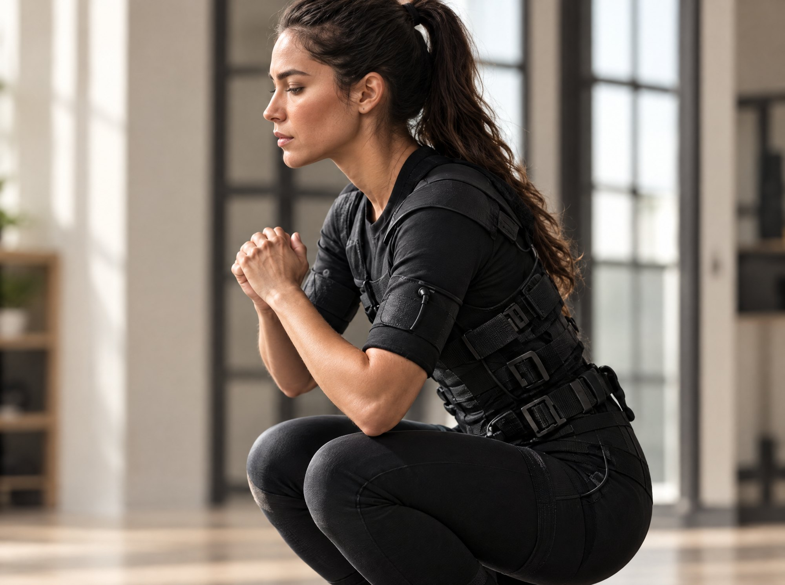

Hedeflerin ve antrenman geçmişin doğrultusunda sana özel bir plan oluşturulur.
Eğitmen eşliğinde
Tüm dersler uzman eğitmen eşliğinde, güvenli ve kontrollü şekilde ilerler.
Seviyene uygun tempo
Kendi ritminde, ihtiyaçlarına uygun bir antrenman deneyimi sunulur.
EMS ANTRENMANI
Hareketin sana uygun hâli.
EMS, elektriksel kas uyarımını hareketle bir araya getiren bir antrenman seçeneğidir. İlk görüşmede hedeflerin ve antrenman geçmişin konuşulur; programın sana uygunluğu değerlendirilir.
Özetle EMS antrenmanı; özel bir kıyafetle verilen hafif elektriksel uyarımları temel hareketlerle birleştiren, eğitmen eşliğinde yaklaşık 25 dakika süren bir antrenman yöntemi. Aşağıda yöntemin nasıl işlediğini, kimlere uygun olduğunu ve Kalissa Fit’te nasıl başlayabileceğini bulabilirsin.

01
EMS antrenmanı nedir?
Adını İngilizce Electrical Muscle Stimulation ifadesinden alan EMS, “elektriksel kas uyarımı” anlamına geliyor. Fizyoterapistler bu yöntemi ilk olarak hareketsiz kalan kasları desteklemek için kullandı; sonra sporcular da antrenmanlarına ekledi ve EMS butik stüdyolara ulaştı. EMS antrenmanında giydiğin özel kıyafetteki elektrotlar, sen hareket ederken kaslarına hafif uyarılar iletir. Böylece karın, sırt, kalça, bacak ve kol kasların aynı egzersiz sırasında birlikte çalışır. Kısacası EMS hareketin yerine geçmez; yaptığın hareketi destekler.
02
25dakika
Bir EMS seansı nasıl geçer?
Seans kısa bir hazırlıkla başlar: EMS kıyafetini giyer, elektrotların doğru yerde olduğunu eğitmeninle birlikte kontrol edersin. Sonra yaklaşık 25 dakikalık antrenman bölümüne birlikte geçersiniz. Bu sürede squat, lunge ve plank gibi temel hareketleri eğitmeninin yönlendirmesiyle yaparsın. Uyarımın şiddetini eğitmenin, kondisyonuna ve o günkü durumuna göre ayarlar; bu yüzden rahatsız hissettiğin anda söylemen yeterli. Üstelik ders birebir ilerlediği için eğitmenin formunu sürekli takip eder ve gerektiğinde düzeltir.
03
EMS antrenmanı kimler için uygun?
Zamanı kısıtlı olup verimli bir antrenman arayanlar EMS’i sıklıkla tercih eder. Benzer şekilde uzun süre spora ara vermiş olanlar, doğum sonrası forma dönmek isteyenler ve belirli bir hedefe odaklananlar da bu yöntemle başlayabilir. Bununla birlikte EMS herkes için uygun değil: kalp pili gibi elektronik bir implant kullananlara, hamilelere ve bazı kronik rahatsızlıkları olanlara EMS önermiyoruz. Bu yüzden ilk görüşmede sağlık geçmişini soruyor, gerektiğinde doktorunun onayını istiyoruz.
04
1–2seans / hafta
Haftada kaç kez EMS antrenmanı yapmalısın?
Programları çoğunlukla haftada bir ya da iki seans üzerine kuruyoruz. Bu sayede kasların, iki seans arasındaki en az bir günlük dinlenmeyle toparlanma fırsatı yakalar. Ders sıklığını ilk görüşmede hedeflerine, antrenman geçmişine ve günlük tempona bakarak birlikte belirliyoruz; sen ilerledikçe de güncelliyoruz. Sonuç olarak düzenli ve sürdürülebilir bir tempo, kısa süreli yoğun bir dönemden daha değerlidir.
05
EMS ile klasik antrenman arasındaki fark
Klasik bir antrenmanda kasların, kaldırdığın ağırlığa ya da kendi vücut ağırlığına karşı çalışır. EMS antrenmanında ise bu çalışmaya elektriksel uyarım eşlik eder; böylece hafif ağırlıklarla ya da yalnızca vücut ağırlığıyla çalışırken de kasların yoğun biçimde devreye girer. Üstelik seans kısa sürdüğü için yoğun bir iş temposunda bile düzenini korumak kolaylaşır. Öte yandan EMS diğer antrenmanlarının yerine geçmek zorunda değil; Kalissa Fit’te onu Reformer Pilates, boks ya da personal trainer derslerinle birlikte planlayabiliriz.
06
Kalamış’ta EMS antrenmanı: Kalissa Fit
Kalissa Fit, Fener Kalamış Caddesi’ndeki binamızın birinci katında yer alan butik bir stüdyo. Antrenman planını hazırlamadan önce, aynı binanın giriş katındaki Kalissa Beauty & Wellness’ta beslenme danışmanımızla bir ön görüşme yapabilirsin. Bu görüşmede hedeflerini, beslenme alışkanlıklarını ve günlük temponu konuşuyoruz; dolayısıyla EMS programını bu bilgilere göre şekillendiriyoruz. Kadıköy ve çevresinden gelenler için deneme dersini uygun bir saate önceden planlıyoruz. Hazır olduğunda bize yaz, ilk adımı birlikte atalım.
Bize WhatsApp’tan ya da iletişim sayfasından yaz; deneme dersini birlikte planlayalım. İlk görüşmede hedeflerini ve antrenman geçmişini konuşur, programın sana uygunluğunu değerlendiririz.
Hedeflerini ve varsa sağlık durumunla ilgili bilmemiz gerekenleri önceden paylaşman yeterli. EMS kıyafeti ve hazırlıkla ilgili ayrıntıları randevunu planlarken iletiriz.